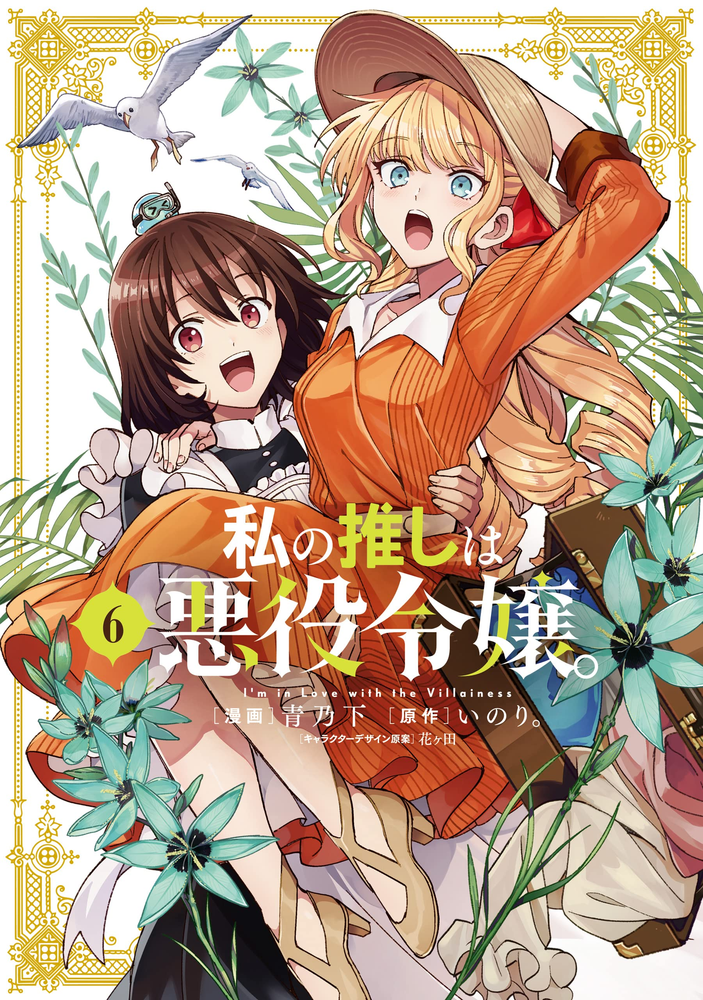

My Future Translations's reader offers pages from other scanlators...in certain scenarios. Applications for additions will not be taken.
I'm In Love with the Villainess
私の推しは悪役令嬢。
私の推しは悪役令嬢。
Art: Aonoshimo Original Story: Inori. Character design: Hanagata Serialization: Comic Yuri-Hime
Ordinary office worker Oohashi Rei wakes up in the body of the protagonist of her favourite otome game, Revolution. To her delight, the first person to greet her is also her favourite character, Claire François – the main antagonist of the story! Now, Rei is determined to romance Claire instead of the game’s male leads. But how will her villainous lady love react to this new courtship?! (Description copied from MangaDex)
